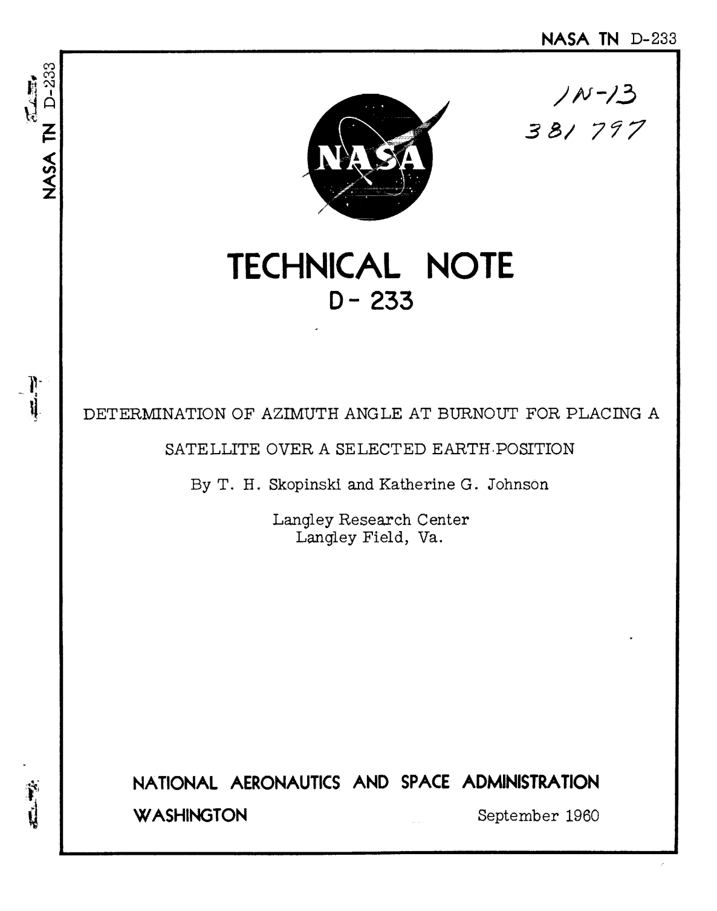
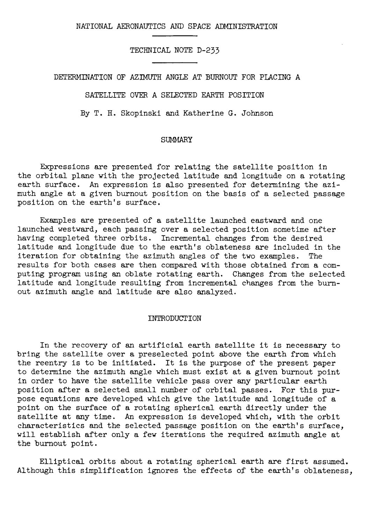
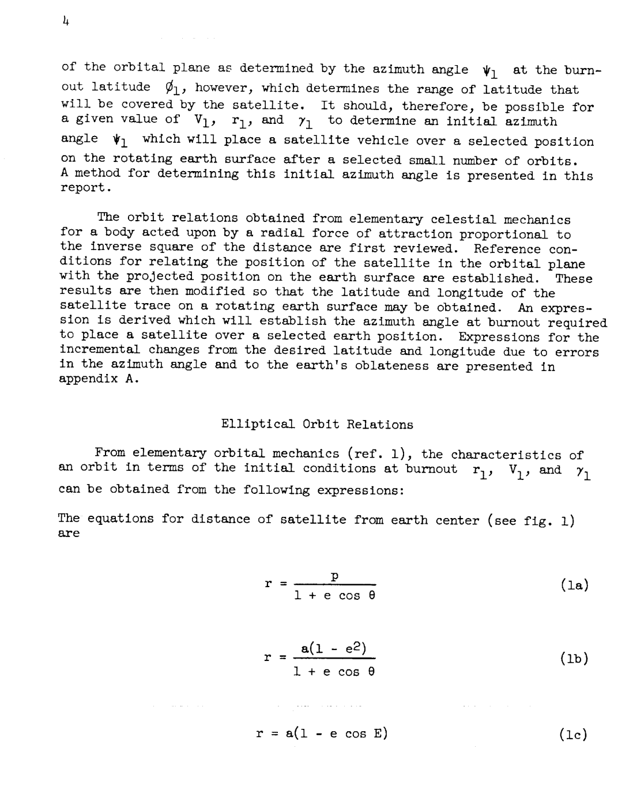
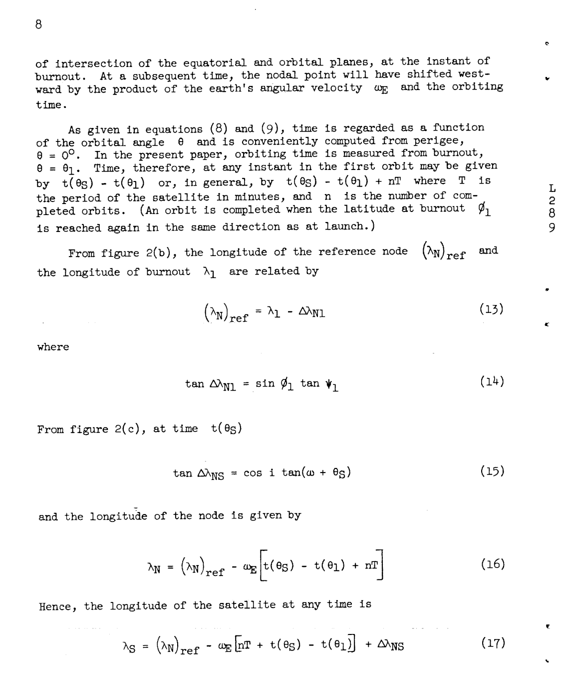
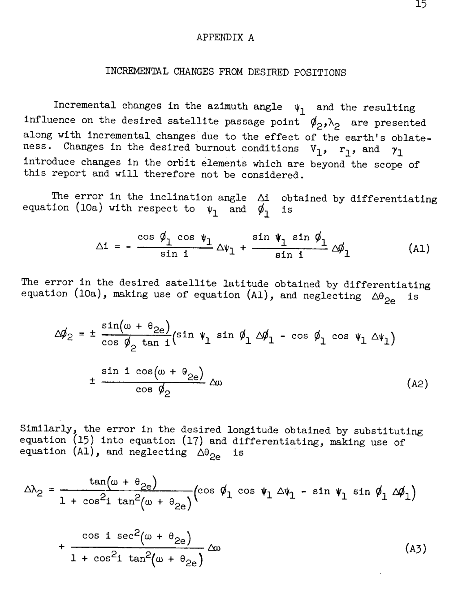
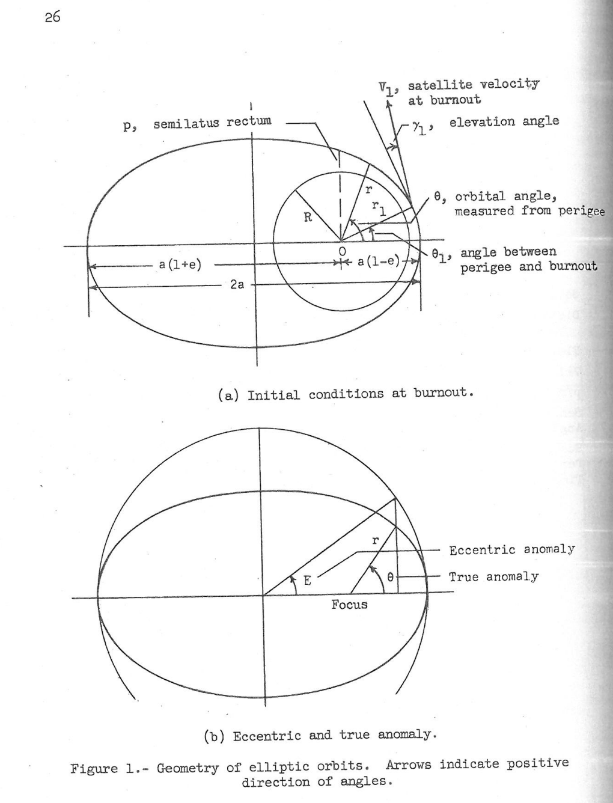
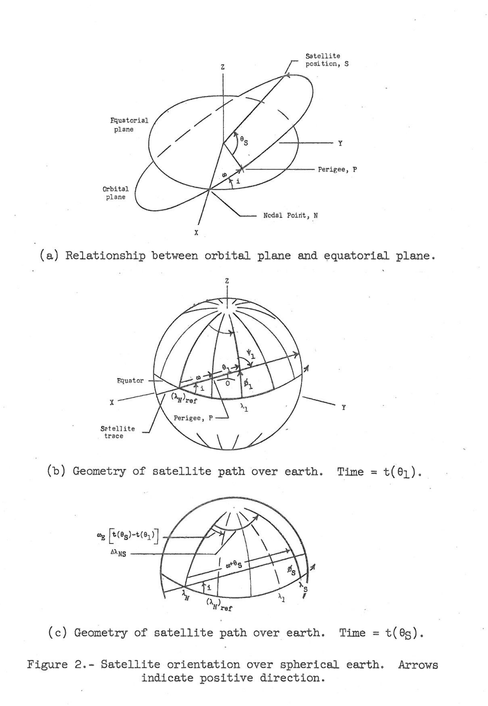

✦ CAREBOT-17 · Grounding Evaluation Task
Evaluate the relationship between Chunks and Atomic Facts.
✦ Instructions
For each Chunk, identify which Atomic Facts are grounded by the information contained in that Chunk.
Important Notes — Grounding Criteria:
Important Notes — Grounding Criteria:
- ✦An Atomic Fact is considered grounded by a Chunk if you can confirm whether the fact is true or false using only the information in that Chunk.
- ✦Atomic Facts don't need to contain exact wording from the Chunk. Synonyms, alternative phrasings, or paraphrased information are acceptable if the meaning is supported by the Chunk.
- ✦An Atomic Fact can be supported by multiple different Chunks — do not exclude a fact from evaluation just because it appeared in a previous chunk.
- ✦Each Chunk should be evaluated independently — focus only on what information that specific Chunk provides.
✦ Provided Text — NASA TN D-233 (1960)
NASA TN D-233
TECHNICAL NOTE D-233
DETERMINATION OF AZIMUTH ANGLE AT BURNOUT FOR PLACING A SATELLITE OVER A SELECTED EARTH POSITION
By T. H. Skopinski and Katherine G. Johnson
Langley Research Center, Langley Field, Va.
NATIONAL AERONAUTICS AND SPACE ADMINISTRATION
WASHINGTON · September 1960
SUMMARY
Expressions are presented for relating the satellite position in the orbital plane with the projected latitude and longitude on a rotating earth surface. An expression is also presented for determining the azimuth angle at a given burnout position on the basis of a selected passage position on the earth's surface.
Examples are presented of a satellite launched eastward and one launched westward, each passing over a selected position sometime after having completed three orbits. Incremental changes from the desired latitude and longitude due to the earth's oblateness are included in the iteration for obtaining the azimuth angles of the two examples. The results for both cases are then compared with those obtained from a computing program using an oblate rotating earth. Changes from the selected latitude and longitude resulting from incremental changes from the burnout azimuth angle and latitude are also analyzed.
INTRODUCTION
In the recovery of an artificial earth satellite it is necessary to bring the satellite over a preselected point above the earth from which the reentry is to be initiated. It is the purpose of the present paper to determine the azimuth angle which must exist at a given burnout point in order to have the satellite vehicle pass over any particular earth position after a selected small number of orbital passes. For this purpose equations are developed which give the latitude and longitude of a point on the surface of a rotating spherical earth directly under the satellite at any time. An expression is developed which, with the orbit characteristics and the selected passage position on the earth's surface, will establish after only a few iterations the required azimuth angle at the burnout point.
Elliptical orbits about a rotating spherical earth are first assumed. Although this simplification ignores the effects of the earth's oblateness, it is convenient to examine the oblateness effects later as incremental changes which can be accounted for in an iteration procedure. Departures from the desired latitude and longitude passage position resulting from incremental changes in the azimuth angle and latitude at burnout are also analyzed.
SYMBOLS
a — semimajor axis of elliptic orbit
E — eccentric anomaly, defined by equation (9)
e — eccentricity of orbit, defined by equation (6)
g0 — gravitational constant at earth surface
i — inclination angle of orbital plane
N — nodal point at which satellite crosses equator
n — number of completed orbital passes, referenced to launch
ϕ — latitude
O — center of earth
P — perigee location in orbital plane
p — semilatus rectum of ellipse, defined by equation (1)
R — radius of earth
r — distance of satellite from earth center
S — position of satellite in orbital plane
T — satellite period, defined by equation (7)
t(θ) — time from perigee, min
V — satellite velocity, defined by equation (3)
Vc — satellite velocity for circular orbit, defined by equation (4)
γ — elevation angle between local horizon and velocity vector, positive upwards
θ — angle in orbital plane measured from perigee point; also, true anomaly
λ — longitude measured east of prime meridian at Greenwich
Δλ NS = λN − λS
Δλ N1 = λN − λ1
ϕ — geocentric latitude measured north or south of equator
ψ — azimuth angle measured clockwise from North
Ω — angle defining rotation of orbital plane about earth's axis
ω — angle in orbital plane between nodal point and perigee and also, argument of perigee, deg
ωE — angular velocity of the earth, 0.25068 deg/min (taken as 0.25 deg/min in this report)
Subscripts:
N — nodal point
n — orbit number
S — any satellite position
1 — initial or burnout position
2 — selected position
2e — equivalent selected position in first orbit
1–2e — increment between initial or burnout position and equivalent position
SATELLITE POSITION RELATIONSHIPS
If drag or accelerating forces acting parallel to the path of the satellite are neglected, the initial conditions of speed V1, radial distance r1, and elevation angle γ1 at final-stage burnout determine the orbit characteristics of a satellite. It is the inclination angle of the orbital plane as determined by the azimuth angle ψ1 at the burnout latitude ϕ1, however, which determines the range of latitude that will be covered by the satellite. It should, therefore, be possible for a given value of V1, r1, and γ1 to determine an initial azimuth angle ψ1 which will place a satellite vehicle over a selected position on the rotating earth surface after a selected small number of orbits. A method for determining this initial azimuth angle is presented in this report.
The orbit relations obtained from elementary celestial mechanics for a body acted upon by a radial force of attraction proportional to the inverse square of the distance are first reviewed. Reference conditions for relating the position of the satellite in the orbital plane with the projected position on the earth surface are established. These results are then modified so that the latitude and longitude of the satellite trace on a rotating earth surface may be obtained. An expression is derived which will establish the azimuth angle at burnout required to place a satellite over a selected earth position. Expressions for the incremental changes from the desired latitude and longitude due to errors in the azimuth angle and to the earth's oblateness are presented in appendix A.
Elliptical Orbit Relations
From elementary orbital mechanics (ref. 1), the characteristics of an orbit in terms of the initial conditions at burnout r1, V1, and γ1 can be obtained from the following expressions:
The equations for distance of satellite from earth center (see fig. 1) are:
r = p / (1 + e cos θ) (1a)
r = a(1 − e²) / (1 + e cos θ) (1b)
r = a(1 − e cos E) (1c)
where p = (V1² / Vc²) r1 cos²γ1.
Satellite velocity is given by V (eq. 2). Satellite velocity for a circular orbit at radius r1 is Vc² = g0 R² / r1 (eqs. 3, 4).
Angle in orbit plane between perigee and burnout point is given by tan θ1 = tan γ1 (r/r1) (eq. 5).
Eccentricity e is given by equation (6).
Satellite period in seconds is given by equation (7). Time from perigee is t(θ) = (T/2π)(E − e sin E) (eq. 8). Eccentric anomaly (fig. 1(b)) is given by E = 2 tan⁻¹[√((1−e)/(1+e)) tan(θ/2)] (eq. 9).
Relations Between Orbit and Earth Systems of Coordinates
In the present paper spherical-triangle relations are used for relating the satellite position in the orbital plane to its trace on the earth surface. By using the inclination angle i of the orbit plane (which is numerically equal to the maximum latitude reached) and a reference or nodal point N, it is possible to obtain the desired position relations between the equatorial and orbital planes. The angular motion of a satellite in an elliptic orbit is usually related to a perigee passage; therefore, in the present paper time is referenced to the perigee point. The orientation of a satellite orbit and the projection of the orbit plane on a spherical earth are illustrated in figure 2.
Latitude position. — The inclination angle i, the angle between the orbit plane and the equatorial plane (fig. 2(a)), is fixed at the instant of burnout by the latitude ϕ1 and azimuth ψ1. If the equations for a right spherical triangle are applied to the triangle bounded by the equator, the projected orbit plane, and the meridian or longitude through the position ϕ1, the pertinent relation for the situation pictured in figure 2(b) is:
cos i = cos ϕ1 sin ψ1 (0° ≤ ψ1 ≤ 180°) (10a)
For a retrograde or westward launching, which occurs when the azimuth angle at burnout exceeds 180°, the relation is:
cos i = −cos ϕ1 sin ψ1 (180° ≤ ψ1 ≤ 360°) (10b)
The position of the satellite in the plane of the orbit at the instant of burnout is specified by the angle θ1 (eq. 5) measured relative to perigee. The perigee point in turn is related to one of the two nodes at the intersection of the projected orbital plane and the equatorial plane by the angle ω. The relationship for the situation shown in figure 2(b) is:
sin ϕ1 = sin i sin(ω + θ1) (11a)
tan ϕ1 / |cos ψ1| = tan(ω + θ1) (11b)
For determination of the argument of perigee ω, with θ1, ϕ1, and ψ1 or i given, the inverse angle relations implied by equations (11a) and (11b) are ordinarily most conveniently resolved in favor of placing the angle ω + θ1 in the first or fourth quadrants — that is, 90° ≥ (ω + θ1) ≥ −90°; thus, for reference purposes the node which is closest to the point of burnout is selected.
Subsequent to burnout, the latitude of the satellite at any point in the orbit ϕS is given by relations similar to equation (11a), that is:
sin ϕS = sin i sin(ω + θS) (12)
For use of equation (12) it is convenient to regard the angle i as positive if the reference node is an ascending node, one where the equator is crossed from south to north. Conversely, if the reference node is a descending node, i should be regarded as a negative angle. The combinations of launch direction and burnout latitude, which lead to positive or negative values of i, together with the range of the azimuth ψ1, are summarized in table I.
Longitude position. — The longitude of a point on the earth's surface is measured by the arc of the equator intercepted between the prime meridian at Greenwich and the meridian through the point. A convenient reference for determining the longitude of a satellite is the node, the point of intersection of the equatorial and orbital planes, at the instant of burnout. At a subsequent time, the nodal point will have shifted westward by the product of the earth's angular velocity ωE and the orbiting time.
As given in equations (8) and (9), time is regarded as a function of the orbital angle θ and is conveniently computed from perigee, θ = 0°. In the present paper, orbiting time is measured from burnout, θ = θ1. Time, therefore, at any instant in the first orbit may be given by t(θS) − t(θ1) or, in general, by t(θS) − t(θ1) + nT where T is the period of the satellite in minutes, and n is the number of completed orbits. (An orbit is completed when the latitude at burnout ϕ1 is reached again in the same direction as at launch.)
From figure 2(b), the longitude of the reference node (λN)ref and the longitude of burnout λ1 are related by:
(λN)ref = λ1 − ΔλN1 (13)
where:
tan ΔλN1 = sin ϕ1 tan ψ1 (14)
From figure 2(c), at time t(θS):
tan ΔλNS = cos i tan(ω + θS) (15)
and the longitude of the node is given by:
λN = (λN)ref − ωE[t(θS) − t(θ1) + nT] (16)
Hence, the longitude of the satellite at any time is:
λS = (λN)ref − ωE[nT + t(θS) − t(θ1)] + ΔλNS (17)
EXPRESSION FOR PLACING A SATELLITE OVER A SELECTED POSITION
The requirement that a satellite with burnout position ϕ1, λ1 pass over a selected position ϕ2, λ2 after the completion of n orbits is equivalent to the requirement that, during the first orbit, the satellite pass over an equivalent position with latitude ϕ2 the same as that of the selected position but with longitude λ2e displaced eastward from λ2 by an amount sufficient to compensate for the rotation of the earth during the n complete orbits, that is, by the polar hour angle nωET. (See fig. 3(a).) The longitude of this equivalent position is thus given by the relation:
λ2e = λ2 + nωET (18)
The azimuth angle ψ1 which will place the satellite over the position ϕ2, λ2e at time t(θ2e) will, therefore, n orbits later place it over the selected position ϕ2, λ2.
The trace of the satellite position from the point ϕ1, λ1 to the point ϕ2, λ2e is not a great circle, since during the time interval t(θ2e) − t(θ1) when the satellite passes through the orbital angle θ2e − θ1, the earth rotates eastward through the polar hour angle ωE[t(θ2e) − t(θ1)]. The difference in polar hour angle (which is a difference in longitude) between the meridian λ1 at t(θ1) and the meridian through the point ϕ2, λ2e at t(θ2e) will be:
Δλ1−2e = λ2e − λ1 + ωE[t(θ2e) − t(θ1)] (19)
Since the latitudes ϕ1 and ϕ2 are known, the orbit angle θ2e − θ1 (fig. 3(b)), may be obtained from equation (19) and the relation:
cos(θ2e − θ1) = sin ϕ2 sin ϕ1 + cos ϕ2 cos ϕ1 cos Δλ1−2e (20)
(In the application of equation (20) it may be noted that since the angles θ2e − θ1 and Δλ1−2e are both portions of intersecting great circles, θ2e − θ1 will be less than (or greater than) 180° when Δλ1−2e is less than (or greater than) 180°.)
In the use of equations (19) and (20) an iterative procedure is required, since the time t(θ2e) from perigee to the equivalent position is not known initially. A satisfactory first approximation is to assume that:
[t(θ2e) − t(θ1)] ≈ (T/360)(λ2e − λ1) (21)
This value, substituted into equation (19), yields a first approximation for Δλ1−2e. This approximation substituted into equation (20) yields a first approximation for θ2e from which, by equation (8), a new value of t(θ2e) is obtained. The iteration of these three steps is continued until the value of θ2e converges. For convenience these equations are listed in appendix B.
The effects of the earth's oblateness, discussed in appendix A, may be included as small modifications of the values of ϕ2 and λ2e obtained in the first iteration. The equations are given in appendix B, and examples are shown in the following section.
When convergence of the value of θ2e has been attained, the azimuth angle at burnout ψ1 may now be calculated from the sine law (fig. 3(b)) by:
sin ψ1 = [sin Δλ1−2e cos ϕ2] / sin(θ2e − θ1) (22)
and the inclination angle by equations (10): cos i = ±sin ψ1 cos ϕ1.
The argument of perigee ω may be calculated from the following equation, which is equation (11a): sin(ω + θ1) = sin ϕ1 / sin i.
The position equations given in the previous section and listed in appendix B may be used to check final values and to compute the complete orbit path.
In orbit calculations, such as those described in this paper, a number of occasions arise when ambiguities of the antitrigonometric functions must be resolved in order to place angles in the proper quadrants. The following conventions have been used in this paper:
Longitude λ: range, 0° to 360°; positive, counterclockwise, eastward; negative, clockwise, westward.
Azimuth ψ1: range, 0° to 360°; clockwise from north; orbits exhibit normal rotation when 0° < ψ1 < 180°; orbits exhibit retrograde motion when 180° < ψ1 < 360°.
Orbit angle θ: range, 0° to 360°; positive for normal rotation; negative for retrograde motion.
Inclination angle i: range, 0° to 90°; measured from equator; positive at ascending node; negative at descending node.
Nodal point N: sometimes specified as ascending node; reference node utilized herein is selected on basis of proximity to burnout point.
EXAMPLE ORBIT CALCULATIONS
In order to illustrate the application of the developed expressions, a temporary satellite orbit has been selected just outside the earth's atmosphere. Examples are given of a satellite launched eastward and one launched westward, each passing over a selected position after having completed three orbits. The two directions of launch illustrate that the procedure is not limited by the direction of launch. The positions were considered favorable positions from which to initiate a reentry leading to a selected recovery area. Incremental changes from the desired latitude and longitude due to the earth's oblateness, as discussed in appendix A, are included in the procedure for obtaining the azimuth angles.
The results for both cases are then compared with the results obtained by the method of reference 2 of a three-degree-of-freedom calculation for an oblate rotating earth performed on an IBM 704 electronic data processing machine. The data from this calculation are referred to hereinafter as three-degree-of-freedom data. Changes from the selected latitude and longitude, resulting from incremental changes from the burnout condition ψ1 and ϕ1, are also analyzed.
The orbit characteristics of a satellite vehicle launched into an orbit 120 nautical miles above the earth's surface with an initial velocity V1 = 1.010 Vc and an elevation angle γ = 0.50° are presented in table II. The satellite radial distance r and time t calculated by equations (1), (8), and (9) are plotted as a function of θ in figure 4. With the three parameters — speed, radial distance, and elevation angle — given, only the azimuth angle at burnout ψ1 remains to be calculated to establish the orbit completely.
Eastward Launch, Case A
The satellite is to be launched eastward from a burnout position ϕ1 = 28.500° N., λ1 = 279.45° E. and is to pass over a position ϕ2 = 34.00° N., λ2 = 241.00° E. after completing three orbits. The steps of the procedure for determining the azimuth angle at burnout are outlined and illustrated in appendix B.
The azimuth angle ψ1 is determined on the basis of an equivalent position ϕ2, λ2e which must be passed in the first orbit. After the first iteration, it is desired to incorporate the oblateness effects as corrections to the desired position and to ϕ2, λ2e. For the orbiting time 3T + t(θ2e) − t(θ1) ≈ 281.615 minutes, there results a change in latitude of 0.086° and a change in longitude of 1.028°. These values are subtracted from the original latitude and longitude to give a corrected position ϕ2 = 33.914° N., λ2 = 239.972° E. and hence a corrected λ2e = 308.661° E. With these substitutions into equations (19) and (20), the iteration for θ2e is continued and final values of the desired quantities are obtained as shown in appendix B.
By using the given initial conditions and ψ1 calculated by the method of this paper, an orbit was calculated by a three-degree-of-freedom method for an oblate rotating earth (ref. 2). A trace of the resulting orbit is presented in figure 5(a). The method of the present paper indicated that the selected position would be reached in 281.316 minutes. The three-degree-of-freedom data indicated that at t = 281.316 minutes the satellite is located at ϕ = 33.98° N., λ = 240.62° E., which is 18.6 nautical miles west of the desired position, and would reach the desired position at t = 281.398 minutes. This agreement is considered good.
With the calculated azimuth and inclination angles, errors in the desired latitude and longitude due to insertion errors in ψ1 and ϕ1 are examined. The results for case A are presented in figure 6(a). The variations of Δi, Δϕ2, and Δλ2 with Δψ1 and Δϕ1 are considered to be small, the slopes being dependent on equations (A1) and (A3).
Westward Launch, Case B
The same iteration procedure is used for the westward launch as used for the eastward launch with pertinent sign changes. As shown in appendix B, first approximations are made and resulting values are used to compute oblateness effects. These corrections are applied to ϕ2 and λ2, and final values are then derived.
As in case A, an orbit was calculated by a three-degree-of-freedom method by using the given initial conditions and ψ1 calculated by the method shown in appendix B.
The trace of the resulting orbit is shown in figure 5(b). The method of this paper indicated that the desired position would be reached in 335.608 minutes. The three-degree-of-freedom data indicated that at t = 335.608 minutes the satellite is located at ϕ = 20.63° N., λ = 320.67° E., a point 52.2 nautical miles west of the desired position.
The variations of Δi, Δϕ2, and Δλ2 with Δψ1 and Δϕ1 for case B as derived in equations (A1) to (A3) are presented in figure 6(b). The results for both cases indicate that the error in the desired latitude and longitude is a function of the orbital angle ω + θ2, the azimuth angle at burnout ψ1, and the burnout latitude ϕ1.
CONCLUDING REMARKS
It is possible by the use of a simple iteration procedure to establish the azimuth angle at burnout on the basis of a selected latitude and longitude and a prescribed number of complete orbits for a given satellite period and orbit eccentricity for either an eastward or westward launch.
Incremental changes from the desired latitude and longitude positions due to the perigee motion and rotation of the orbital plane can conveniently be taken into account in the procedure. The magnitude of the changes for a given orbit is a function of the time in orbit and the inclination angle of the orbital plane. A comparison of the results for both the eastward and westward launches with the results obtained from a three-degree-of-freedom calculation for an oblate rotating earth shows very good agreement. This indicates that there are no apparent limitations as to launch direction or selected passage point. The error in the desired latitude and longitude is a function of the orbital angle, the azimuth angle at burnout, and the burnout latitude.
Langley Research Center,
National Aeronautics and Space Administration,
Langley Field, Va., November 27, 1959.
APPENDIX A — INCREMENTAL CHANGES FROM DESIRED POSITIONS
Incremental changes in the azimuth angle ψ1 and the resulting influence on the desired satellite passage point ϕ2, λ2 are presented along with incremental changes due to the effect of the earth's oblateness. Changes in the desired burnout conditions V1, r1, and γ1 introduce changes in the orbit elements which are beyond the scope of this report and will therefore not be considered.
The error in the inclination angle Δi obtained by differentiating equation (10a) with respect to ψ1 and ϕ1 is:
Δi = −(cos ϕ1 cos ψ1 / sin i) Δψ1 + (sin ψ1 sin ϕ1 / sin i) Δϕ1 (A1)
The error in the desired satellite latitude obtained by differentiating equation (10a), making use of equation (A1), and neglecting Δθ2e is:
Δϕ2 = ±[sin(ω + θ2e) / (cos ϕ2 tan i)](sin ψ1 sin ϕ1 Δϕ1 − cos ϕ1 cos ψ1 Δψ1) ± [sin i cos(ω + θ2e) / cos ϕ2] Δω (A2)
Similarly, the error in the desired longitude obtained by substituting equation (15) into equation (17) and differentiating, making use of equation (A1), and neglecting Δθ2e is:
Δλ2 = [tan(ω + θ2e) / (1 + cos²i tan²(ω + θ2e))](cos ϕ1 cos ψ1 Δψ1 − sin ψ1 sin ϕ1 Δϕ1) + [cos i sec²(ω + θ2e) / (1 + cos²i tan²(ω + θ2e))] Δω (A3)
The errors in ϕ2 and λ2 as presented by equations (A2) and (A3) are thus made up of errors in the insertion conditions ψ1 and ϕ1 and errors due to perigee motion Δω. These errors are as follows:
Δϕ2 = (Δϕ2)ie + (Δϕ2)pm
Δλ2 = (Δλ2)ie + (Δλ2)pm
where the subscripts ie and pm represent insertion errors and perigee motion (oblateness effects), respectively, and:
(Δϕ2)pm = ± [sin i cos(ω + θ2e) / cos ϕ2] Δω (A4)
(Δλ2)pm = [cos i sec²(ω + θ2e) / (1 + cos²i tan²(ω + θ2e))] Δω (A5)
The rotation of the perigee point Δω is defined as:
Δω = (dω/dt) Δt (A6)
where the approximate mean rate of the argument of perigee motion or rotation of the major axis in deg/min (ref. 3) is:
dω/dt = 3.4722 × 10⁻³ (R/p)² (R/T)^(3/2) (5cos²i − 1) (A7)
The rotation of the major axis is in the same direction as the satellite if i < 63.4°, in the opposite direction if i > 63.4°, and is zero when i = 63.4°. The other main effect of the earth's oblateness is the rotation of the orbital plane ΔΩ defined as:
ΔΩ = (dΩ/dt) Δt (A8)
The orbital plane rotates about the earth's axis in the opposite direction to the earth's rotation, and the approximate mean rate of rotation of the orbital plane in deg/min (ref. 3) is given by equation (A9).
The rotation of the orbital plane affects only the incremental longitude so that a ΔΩ term must be included in equation (A3) to give the total oblateness effect on the longitude of the desired passage point. The magnitudes of Δω and ΔΩ are obtained by multiplying equations (A7) and (A9) by the orbiting time nT + t(θ2) − t(θ1) expressed in minutes.
Changes from the desired satellite passage point due to oblateness effect can be taken into account in the iteration procedure previously discussed. The desired passage point becomes ϕ2 − (Δϕ2)total, λ2 − (Δλ2)total. These values are substituted into equation (19) before a second iteration is performed.
APPENDIX B — EQUATIONS FOR CALCULATING AZIMUTH ANGLE, OBLATENESS EFFECTS, AND SATELLITE POSITION AND ILLUSTRATIVE EXAMPLES
Azimuth Angle
The calculation of the azimuth angle at burnout involves the use of equations (21), (18), (19), (20), (8), (22), and (10), in sequence, iterating until convergence.
Oblateness Effects
The oblateness effects are calculated using equations (A4) through (A9), as detailed in appendix A.
Satellite Position
The calculation of the satellite position involves the use of equations (12), (17), (11a), (14), (13), and (15).
Illustrative Examples of Orbit Calculations
In the following sections examples of the orbit calculations for cases A (eastward launch) and B (westward launch) are given to demonstrate the application of the method.
Case A, eastward launch. — For case A, eastward launch, the given launch position is ϕ1 = 28.50° N., λ1 = 279.45° E.; the selected position is ϕ2 = 34.00° N., λ2 = 241.00° E.; the number of orbital passes n is 3; and the equivalent selected longitude λ2e is 309.689° E. The values of the first approximations are:
[t(θ2e) − t(θ1)] ≈ 7.693
Δλ1−2e = 32.162
θ2e = 51.89
t(θ2e) = 12.702
ψ1 = 70.468
i = 34.081
The values found in the calculation of the oblateness effects are:
Δω = 1.945, Δϕ2 = 0.086, ΔΩ = −1.340, Δλ2 = 1.028
Corrected ϕ2 = 33.914° N., corrected λ2 = 239.972° E.
The iteration procedure, as explained in the text of this paper, converges over several iterations to the following final values:
ψ1 = 70.541
i = 34.043
(λN)ref = 225.971
ω = 34.497
Case B, westward launch. — For case B, westward launch, the given launch position is ϕ1 = 34.00° N., λ1 = 241.00° E.; the selected position is ϕ2 = 20.00° N., λ2 = 320.00° E.; the number of orbital passes n is 3; and the equivalent selected longitude λ2e is 28.689° E. The values of the first approximations are:
t(θ2e − θ1) = 54.012
Δλ1−2e = −198.808
θ2e = −260.863
t(θ2e) = 66.996
ψ1 = 201.203
i = −72.553
The values found in the calculation of the oblateness effects are:
Δω = −0.531, Δϕ2 = 0.503, ΔΩ = −0.578, Δλ2 = −0.759
Corrected ϕ2 = 19.497° N., corrected λ2 = 320.759° E.
The iteration procedure converges to the following final values:
ψ1 = 198.721
i = −74.569
(λN)ref = 230.269
ω = 59.427
REFERENCES
1. Moulton, Forest Ray: An Introduction to Celestial Mechanics. Second rev. ed., The Macmillan Co., c.1914.
2. Nielsen, Jack N., Goodwin, Frederick K., and Mersman, William A.: Three-Dimensional Orbits of Earth Satellites, Including Effects of Earth Oblateness and Atmospheric Rotation. NASA MEMO 12-4-58A, 1958.
3. King-Hele, D. G., and Gilmore, D. M. C.: The Effect of the Earth's Oblateness on the Orbit of a Near Satellite. Tech. Note No. G.W.475, British R.A.E., Oct. 1957.
TABLE I — MAGNITUDE OF AZIMUTH ANGLE ψ1 AND SIGN OF INCLINATION ANGLE i FOR A GIVEN BURNOUT LATITUDE AND LAUNCH DIRECTION
Burnout latitude N.(+): launch NE → i(+), ψ1 0–90°; launch SE → i(+), ψ1 90–180°; launch NW → i(−), ψ1 270–360°; launch SW → i(−), ψ1 180–270°.
Burnout latitude S.(−): launch SE → i(+), ψ1 90–180°; launch NE → i(+), ψ1 0–90°; launch SW → i(−), ψ1 180–270°; launch NW → i(−), ψ1 270–360°.
TABLE II — ORBIT CHARACTERISTICS USED FOR SAMPLE CALCULATIONS
Satellite velocity at burnout, V1, ft/sec: 25,761.545
Distance of satellite from center of earth at burnout, r1, ft: 21,637,935
Elevation angle, γ1, deg: 0.5
Velocity for circular orbit, Vc, ft/sec: 25,506.28
p/r1: 1.020022269
Semimajor axis, a, ft: 22,081,775.58
Angle between perigee and burnout, θ1, deg: +23.969
Eccentricity, e: 0.0219118
Period, T, min: 91.585
Time from perigee to burnout, t(θ1), min: 5.842
NASA — Langley Field, Va. L-289







Time elapsed ✦
0.0s
✦ Your Answer
Type your answer to reveal the completion button ✦
✦ carebot research system ✦